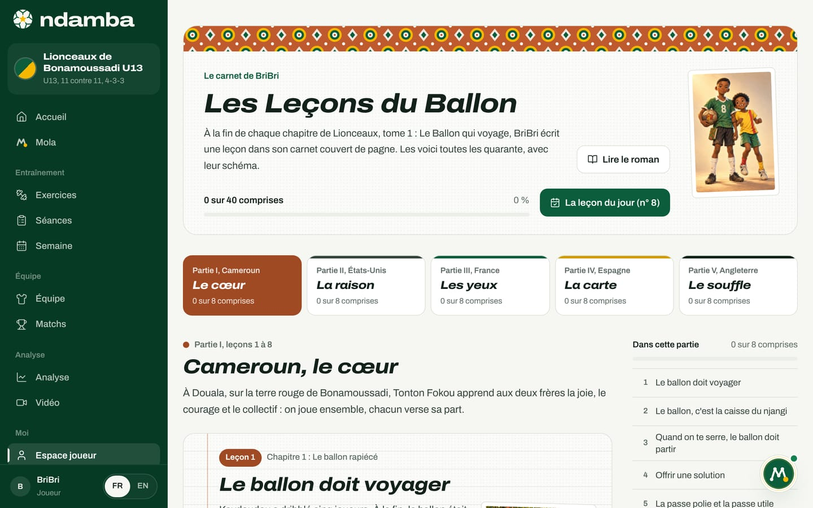
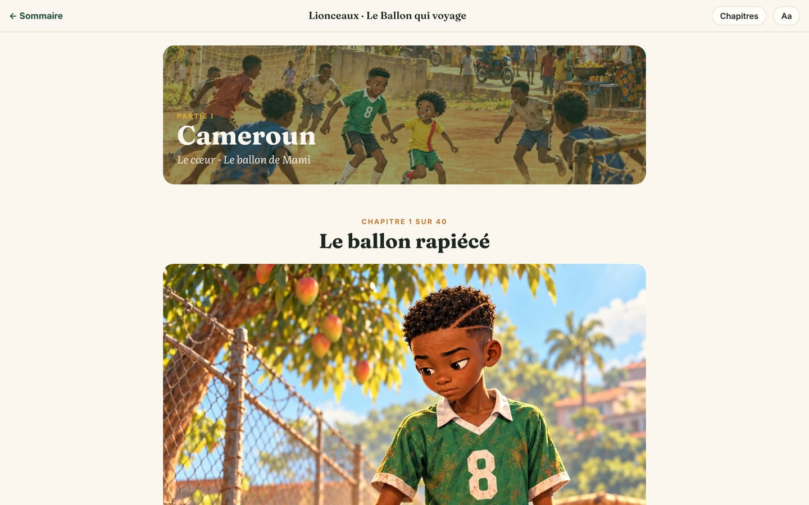

Lionceaux, la saga de Kaydoudou et BriBri
Le roman jeunesse de Ndamba : deux frères, cinq pays, 40 chapitres et 168 illustrations, une Leçon du Ballon à la fin de chaque chapitre qui devient une page de l’application, six tomes prévus, et la manière de le lire en ligne.
10 min de lecture
Un livre de méthode parle aux adultes. Un enfant, lui, apprend une idée de jeu à travers une histoire et des héros qu’il aime. Lionceaux, tome 1 : Le Ballon qui voyage est ce roman : une aventure de football écrite en français pour les lecteurs de 8 à 12 ans, à lire seul ou à voix haute en famille. Il raconte avec des mots d’enfant la même idée que Le Code Njangi : posséder le ballon avec intention. Dans Ndamba, chaque chapitre se termine par une leçon qui devient une page de l’application, et le monde du roman habite la démo de l’académie U13. Le roman et ses leçons sont la porte d’entrée des plus jeunes et de leurs familles.
Le roman en bref
Lionceaux est le nom de la saga, écrit en grandes lettres en haut de chaque couverture avec le numéro du tome. Le tome 1, Le Ballon qui voyage, est écrit par William Foteping. Il compte 40 chapitres répartis en cinq parties, une par pays. Chaque chapitre est raconté par l’un des deux frères, le plus souvent en alternance ; le sommaire de la page Les livres l’indique par « Raconté par BriBri » ou « Raconté par Kaydoudou ».
Le livre est illustré de 168 peintures au style cinématographique, toutes publiées dans le lecteur en ligne : la couverture, deux pages de personnages (les deux frères, puis Mami Nyanga, Tonton Fokou, Papa et Maman), cinq ouvertures de partie, quarante ouvertures de chapitre et trois images dans le texte de chaque chapitre.
La page d’accueil du roman porte une dédicace : « Pour Kaydoudou et BriBri. Que le ballon voyage toujours, et qu’il sache toujours où il va. », signée Papa. Les deux héros portent les prénoms des fils de l’auteur.

Les deux frères
BriBri est le grand frère : 12 ans au premier chapitre, 16 ans au dernier. Grand et mince, calme, il porte un maillot vert délavé numéro 8, puis devient le 6, le pivot qui distribue le jeu. Il voit tout, parle peu, oriente ses partenaires avec les mains. Il aime les mathématiques et les plans. C’est lui qui tient le carnet du Njangi, un cahier couvert de pagne offert par Tonton Fokou. Son chemin dans le tome 1 : oser la passe qui traverse les lignes, et devenir un leader qui parle.
Kaydoudou est le petit frère : 10 ans au début, 14 ans à la fin. Joues rondes, petite afro, grand sourire avec une dent du bonheur, il ne tient jamais en place. Ailier, dribbleur, blagueur, il imite tout le monde et porte toujours une chaussette rouge et une chaussette jaune, sa signature dans tous les pays. À chaque but, il fait la danse de Roger Milla au poteau de corner. Son chemin : comprendre que dribbler, ce n’est pas jouer seul ; le « dribble njangi » attire deux adversaires pour libérer un partenaire.
Ensemble, ils ont leur combinaison, « le une-deux du Njangi », et leur rituel de réconciliation : poing contre poing, puis main sur le cœur. Comme ils ont deux ans d’écart, Kaydoudou joue « surclassé » dans la catégorie de son frère, parce que l’entraîneur le décide.
Autour d’eux : Papa, Armand, ingénieur réseau, dont le travail fait déménager la famille ; Maman, Estelle, infirmière, qui tient la règle « Pas de devoirs, pas de crampons » ; Mami Nyanga, la grand-mère de Bafoussam, présidente du njangi des femmes de son quartier ; et Tonton Fokou, l’entraîneur bénévole des Lionceaux de Bonamoussadi, dont la seule règle est « Le ballon doit voyager ». Mami recoud le vieux ballon des garçons avec un carré de pagne rouge et jaune : le ballon de Mami les suit dans chaque pays.
Cinq pays, cinq pièces du Njangi
| Partie | Pays et lieux | Chapitres | Pièce du Njangi | Ce que les frères apprennent |
|---|---|---|---|---|
| I | Cameroun : Douala (Bonamoussadi) et Bafoussam | 1 à 8 | Le cœur | Jouer ensemble, chacun verse sa part |
| II | États-Unis : Waldorf, Maryland | 9 à 16 | La raison | Posséder n’est pas garder : chaque passe doit servir |
| III | France : Seine-et-Marne | 17 à 24 | Les yeux | Voir avant de recevoir, jouer entre les lignes, reprendre vite |
| IV | Espagne : un village catalan près de Tarragone | 25 à 32 | La carte | Le rondo, la pausa, le troisième homme, les supériorités |
| V | Angleterre : Londres | 33 à 40 | Le souffle | L’intensité, le pressing, posséder aussi quand ça brûle |
Chaque déménagement suit le travail de Papa ; les garçons rejoignent alors un club local. Ils ne sont jamais « transférés » comme des joueurs adultes : le roman y tient, les garçons ne changent jamais de pays pour le football, ils suivent leur famille. Le calendrier du roman touche le réel : la deuxième partie se déroule en 2026, et la famille vit la Coupe du monde jouée aux États-Unis, au Canada et au Mexique, sans le Cameroun, comme une blessure qui nourrit le rêve. Les clubs et les académies des frères sont inventés ; aucun joueur réel n’est nommé, sauf Roger Milla.
Les 40 chapitres et leurs Leçons du Ballon
À la fin de chaque chapitre, BriBri écrit dans son carnet la « Leçon du Ballon » du jour : un titre, quelques lignes, et le plus souvent un schéma de terrain dessiné avec le même outil que les fiches d’exercices du Code Njangi.
| Chapitre | Leçon du Ballon |
|---|---|
| 1 Le ballon rapiécé | Le ballon doit voyager |
| 2 Le njangi de Mami | Le ballon, c’est la caisse du njangi |
| 3 Les Requins de Bépanda | Quand on te serre, le ballon doit partir |
| 4 La boue et le pagne | Offrir une solution |
| 5 La passe polie et la passe utile | La passe polie et la passe utile |
| 6 La lettre de Waldorf | Un joueur qui bouge reste dans l’équipe |
| 7 Le carnet de Tonton Fokou | Oser la passe qui traverse |
| 8 Finale à Bonamoussadi | Le cœur du Njangi |
| 9 La neige de Waldorf | Petit espace, grande tête |
| 10 Les tryouts | Le premier contrôle va quelque part |
| 11 Soixante-dix pour cent | Posséder n’est pas garder |
| 12 Les chiffres de Marcus | Dribbler pour attirer |
| 13 Pas de devoirs, pas de crampons | Les lignes |
| 14 La Coupe du monde chez nous | Une équipe, une idée |
| 15 Courir pour les autres | Courir pour les autres |
| 16 Goodbye, Potomac | Compter ce qui compte |
| 17 Avant de recevoir, tu regardes | Le scan |
| 18 Entre les lignes | Entre les lignes |
| 19 Kenzo | Le corps ouvert |
| 20 Le match de trop | On ne laisse personne seul |
| 21 Les cinq secondes | Les cinq secondes |
| 22 Noël sans Mami | Voir avant, c’est jouer plus vite |
| 23 Parler, c’est passer | Parler, c’est passer |
| 24 Des yeux pour partir | Les yeux du Njangi |
| 25 Le taureau | Le rondo |
| 26 Avi Ramon | La pausa |
| 27 Les couloirs | Les cinq couloirs |
| 28 Le troisième homme | Le troisième homme |
| 29 La mer et Mami | Le dribble njangi (inventé par Kaydoudou) |
| 30 Les trois supériorités | Les trois supériorités |
| 31 L’Atlas | Lent, lent, VITE |
| 32 La carte du Njangi | La carte du Njangi |
| 33 Intensity is a choice | Recevoir sous pression |
| 34 Jouer avant le contact | Jouer avant le contact |
| 35 Le pressing | Les déclencheurs |
| 36 Le njangi du vestiaire | Le njangi du vestiaire |
| 37 Monsieur Atéba | Après la récupération, regarder devant |
| 38 Le souffle | Le ballon respire pour nous |
| 39 L’avion de Mami | Les cinq pièces du Njangi |
| 40 Le but du Njangi | Le but du Njangi |
Ce guide ne raconte pas la fin : elle appartient aux lecteurs.
De la page du roman à la page de l’application
Ndamba reprend chaque leçon telle qu’elle est écrite dans le roman, avec son schéma, et en fait une page de l’Espace joueur : « Les Leçons du Ballon », sous-titrée « Le carnet de BriBri ».
- Pour un joueur de moins de 16 ans, ou pour un parent, ouvrez Espace joueur puis, tout en bas de la page, touchez Les Leçons du Ballon (« Les 40 pages du carnet de BriBri »). Sur l’accueil d’un jeune joueur, « La leçon du jour » mène au même endroit par Toutes les leçons. Pour tous les profils, la page Les livres propose le lien Les Leçons du Ballon dans l’application.
- En haut, la barre « 0 sur 40 comprises » suit votre progression, et La leçon du jour (n° 8) ouvre la leçon choisie pour aujourd’hui (le numéro change chaque jour). Lire le roman ouvre le livre.
- Choisissez une partie parmi les cinq onglets (Partie I, Cameroun, Le cœur, et les suivantes).
- Chaque leçon montre son chapitre d’origine, ses lignes, l’illustration du chapitre et « Le schéma du carnet ». Touchez J’ai compris quand c’est le cas, ou Lire le chapitre 1 pour relire l’histoire.
- Sous la leçon, « Le défi qui va avec » propose un défi à faire seul, et le lien vers un exercice (par exemple « Exercice R07 ») ouvre la fiche correspondante. Écrire dans mon carnet ouvre le carnet du joueur, présenté au chapitre 16 de ce guide.
Chaque leçon est ainsi reliée à l’une des dix compétences du joueur Njangi, à un défi et à un exercice. Les leçons comprises sont enregistrées sur cet appareil, et la sauvegarde exportée depuis Réglages les emporte aussi.


Le monde du roman dans la démo U13
La Démo académie U13 vous fait entrer dans le roman. L’équipe s’appelle Lionceaux de Bonamoussadi U13, l’entraîneur est Tonton Fokou, et l’effectif compte BriBri, Kaydoudou, Mireille « la Gazelle » Eyenga et Ousmane « Petit Pied » Bello. Le dernier match a été joué contre les Requins de Bépanda, le prochain se joue contre les Panthères de Deïdo, dans le tournoi des quartiers. Ce sont des données de démonstration, inventées : elles montrent à un éducateur comment l’application vit au quotidien avec des noms que ses joueurs connaissent déjà.

Six tomes prévus
| Tome | Titre | État |
|---|---|---|
| 1 | Le Ballon qui voyage | Disponible |
| 2 | La Tanière des Lionceaux | À paraître |
| 3 | Premier contrat | À paraître |
| 4 | La CAN | À paraître |
| 5 | Mondial 2030 | À paraître |
| 6 | 2034, l’étoile | À paraître |
La page Les livres les présente sous le titre « La saga en six tomes » : six tomes pour suivre les deux frères du terrain de quartier jusqu’à la Coupe du monde. Le calendrier de la saga suit celui de Ndamba : BriBri et Kaydoudou ont 12 et 10 ans en 2026, ils auront 20 et 18 ans en 2034, 24 et 22 ans en 2038.
Lire le roman en ligne
- Sur la page Les livres, dans la partie Lionceaux, touchez Lire en ligne (ou Lire sous le tome 1 dans la rangée des six tomes).
- La page d’accueil montre la couverture, la dédicace, les deux pages de personnages et la liste « Les 40 chapitres », partie par partie. Touchez Commencer au chapitre 1, ou Reprendre la lecture pour retrouver votre place.
- Chaque partie s’ouvre sur sa peinture. Chaque chapitre porte la mention « Chapitre 1 sur 40 », s’ouvre sur une grande illustration et se termine par la page du carnet, « Leçon du Ballon n°1 », le plus souvent avec son schéma. Suivant passe au chapitre d’après.
- Chapitres et Aa fonctionnent comme dans Le Code Njangi (chapitre 19 de ce guide) ; chaque livre retient sa propre place.
- Au bas du sommaire, « À suivre : Lionceaux, tome 2 : La Tanière des Lionceaux » annonce la suite, et le lien « Les 40 Leçons du Ballon dans l’application » ramène aux leçons.


Pour les parents et les éducateurs, deux repères. Un chapitre de la partie française aborde le racisme une seule fois, avec sérieux et pudeur : l’arbitre arrête le match, l’équipe entoure l’enfant, les adultes réagissent. Et l’avant-propos du Code Njangi propose une habitude simple : lire un chapitre le vendredi, le faire vivre sur le terrain le samedi.